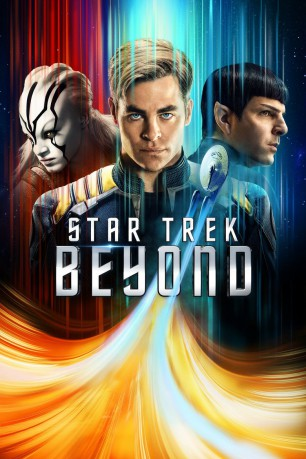

Alternativ: Star Trek Beyond
 
 IMDB-Wertung: 7.2 / 10
IMDB-Wertung: 7.2 / 10  Metascore:
Metascore: 
Auf ihrer Forschungsmission gerät die Enterprise in einen gnadenlosen Hinterhalt. Unter Dauerbeschuss kann die Crew um Captain Kirk nur in letzter Sekunde auf fremdem Terrain notlanden. Doch statt in Sicherheit befindet sie sich plötzlich zwischen den Fronten eines scheinbar ausweglosen Konflikts. Getrennt voneinander und ohne Kontakt zur Außenwelt ziehen Kirk und sein Team in den Kampf gegen einen mysteriösen und übermächtigen Feind.
Jahr: 2016
Dauer: 122 Minuten
FSK: 12
Land: USA Studio: Paramount PicturesTonspuren: DTS - ,
Untertitel: Deutsch,
Auflösung: 1080p (1920x1080) Größe: 6307 MB
Genre: Action, Thriller, Sci-Fi, Abenteuer
Regisseur: Justin Lin
Drehbuch: Emmanuel Mouret
Soundtrack:
Darsteller:
Datei: X:\7+mehr(A-Z)\Star Trek\Star Trek 13 - Beyond (2016, FSK12, 1920x1080) 3D.mkv seit 25.10.2016
Festplatte: HD Collection-7+mehr(A-Z)+Person
 Es gibt insgesamt 19 Filme in der Gruppe '7+mehr(A-Z)\Star Trek'
Es gibt insgesamt 19 Filme in der Gruppe '7+mehr(A-Z)\Star Trek'